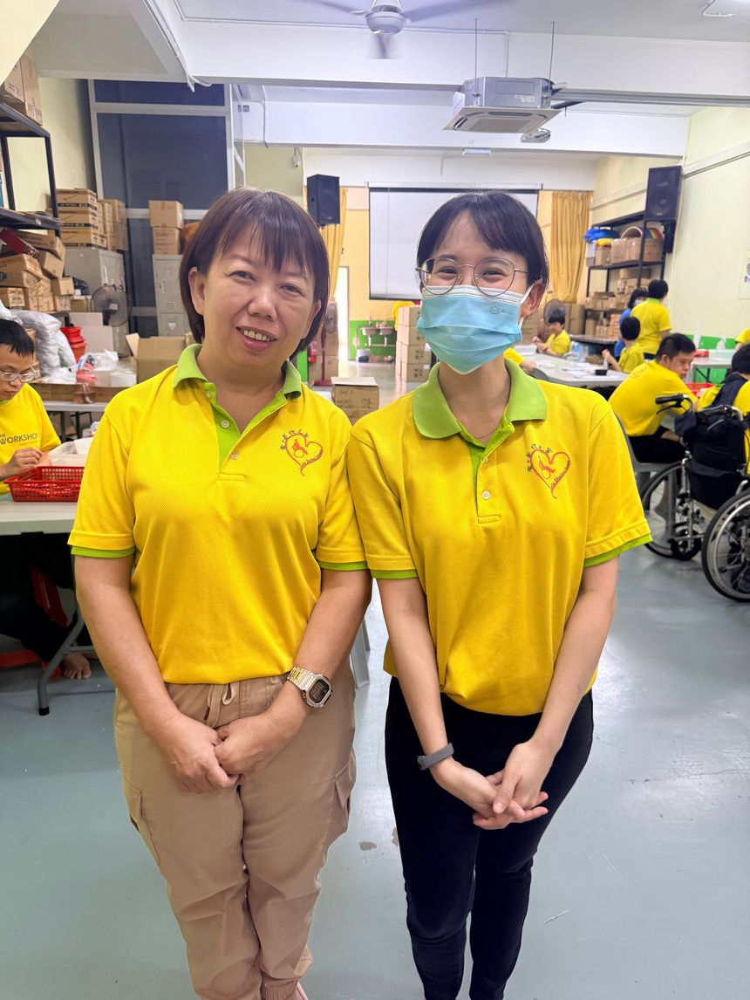
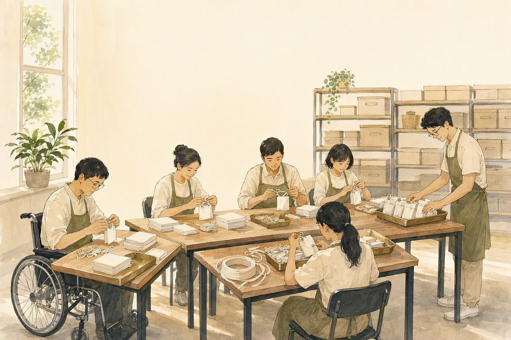
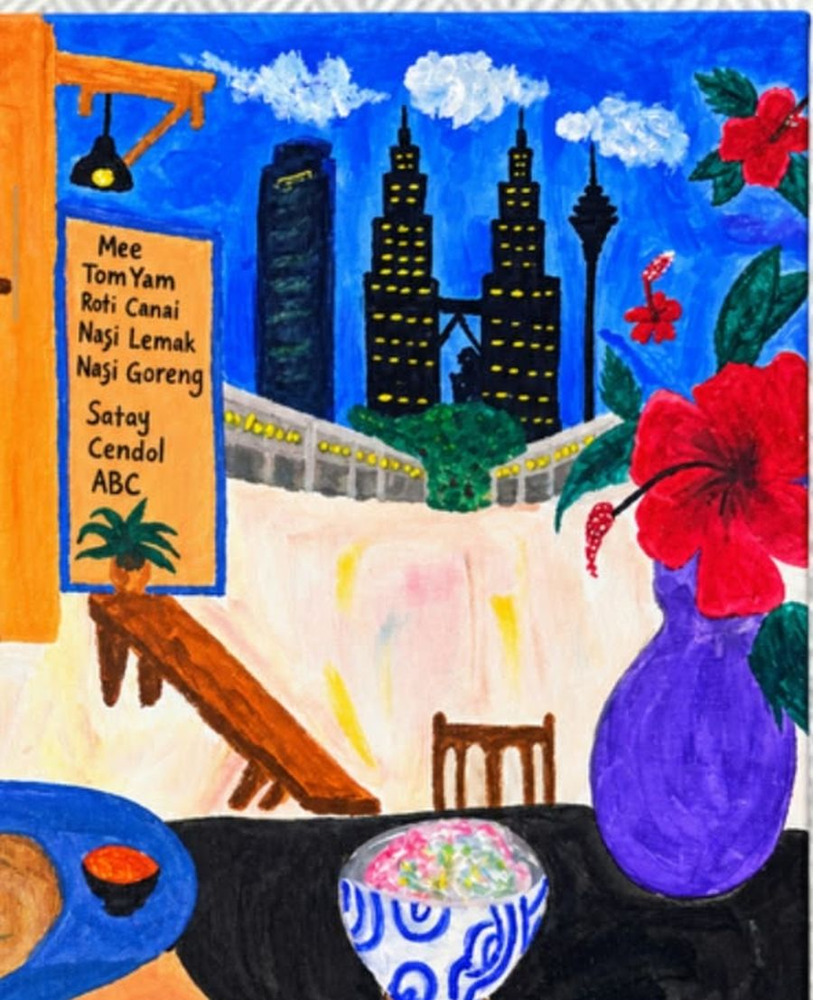
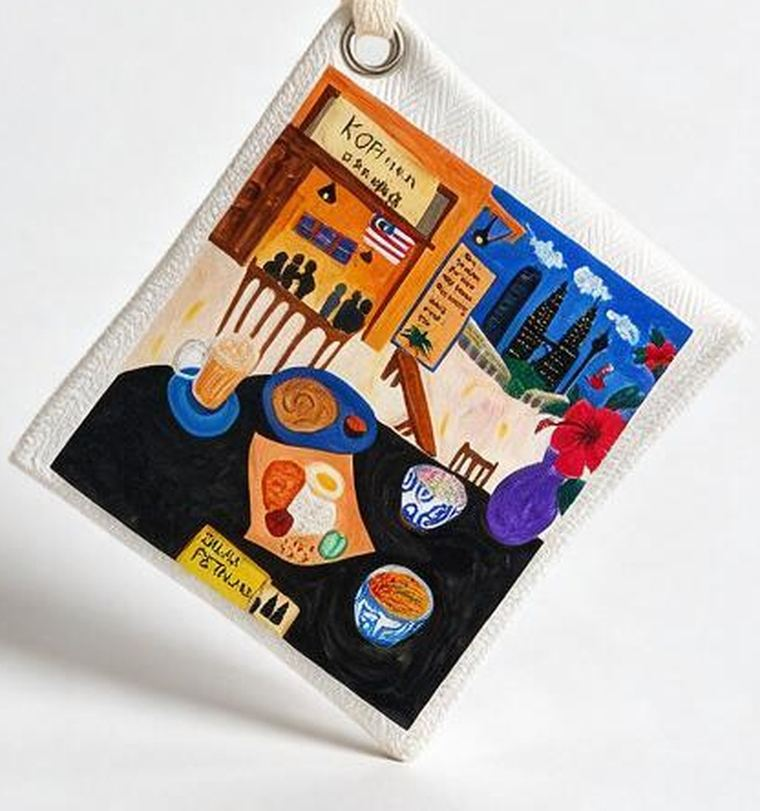

Why Indera
Their biggest barrier isn't always disability — it's opportunity.
We reduce them to what they can't do, instead of what they can. Indera starts from the other end: the work is skilled, so the work gets paid for and credited.
The picture in Malaysia
DOSM, Survey on Employment of Persons with Disabilities in Malaysia, 2025 (n = 1,830 employers)
DOSM, Survey on Employment of Persons with Disabilities in Malaysia, 2025 (n = 1,830 employers)
Jabatan Kebajikan Masyarakat (JKM) monthly support
Employers rate the work highly. Almost four in five still don't employ anyone with a disability. That gap is the whole problem — and it is not a gap in ability.
A reading of the evidence
The disadvantage has almost nothing to do with the disability itself — and almost everything to do with broken systems and policy failures.
A close paraphrase of Indhira Santos, Lead Economist, World Bank — Building inclusive support systems for persons with disabilities
What we do
One charm. Four skilled jobs.
- The artwork. A young artist with Down syndrome paints the design that becomes the back of the charm.
- The line drawing. Another young artist with a disability draws the figure on the logo face.
- The scent. Mr. Lee Seng Chow — a visually impaired former Paralympian and owner of PB Blind Massage — hand-formulates it.
- The assembly. Artisans at Lovely Disabled Home add solvent and seal the sachet, insert the sachet into the pouch, then tie the loop and finish.

Everyday Malaysia
The artwork programme runs with MAB, the Malaysian Association for the Blind: visually impaired artists draw “Everyday Malaysia” from touch and memory.
Why this craft
The work fits the maker.
- Tactile handling sharpens focus and motor skills.
- Controlled scent eases anxiety for neurodivergent workers.
- The steps are simple and repeatable — no digital literacy needed.
- Cold-process assembly: no boiling, no chemicals, no sharp tools.


Painting to product
Nothing is redrawn by us.
The Kopitiam charm is the painting above, reproduced on cotton twill. The menu board, the hibiscus, the skyline, the dishes on the black table — all of it is the artist's.

Indera isn't about sympathy. It's about turning ability into opportunity.
Your support isn't just about the money — it's a true appreciation of their work, and a direct encouragement of their talent.
A fixed 10% of every sale is allocated to the social fund.